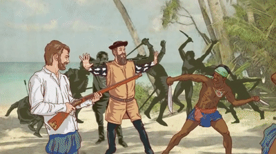

Moartea lui Magellan
În martie 1521.
Filipine
Aici, Magellan a fost implicat în conflicte cu triburile locale, culminând cu moartea sa într-o confruntare cu tribul Mactan.
Experiență
- Magellan a fost implicat în conflicte cu triburile locale, căutând să stabilească controlul spaniol asupra insulelor. În confruntarea cu tribul Mactan, pe 27 aprilie 1521, Magellan a fost ucis, marcând un moment crucial în călătoria sa.
- Corabierii rămași au continuat expediția, încheind circumnavigarea Pământului și demonstrând curajul și perseverența în fața adversităților.
- Această experiență în Filipine a fost un punct de cotitură în istoria explorării și colonizării globale, lăsând o amprentă durabilă asupra regiunii și a întregii lumi.
